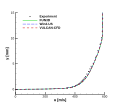
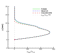
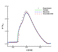
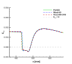
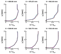
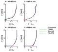

|
Turbulence Modeling Resource |
Jump to: SA Results
Return to: Axisymmetric Impinging Shock Boundary-Layer Interaction Validation - Intro Page
Return to: Turbulence Modeling Resource Home Page
SST-Vm Model Results
Link to SST-Vm equations
      The plots compare the SST-Vm results from FUN3D, Wind-US, and VULCAN-CFD with experimental data.
Slightly different boundary conditions were used for different codes:
Please read note 5 on Notes on running CFD page as well as the page on Defining Boundary Conditions.
These results are from the finest grid (161x361; 81x361; 161x361; 217x361; 321x321; 721x321) and all codes yield nearly identical results.
The data files from all three codes are given here:
A typical FUN3D input file is: fun3d.nml.
Jump to: SA Results
Return to: Axisymmetric Shock Boundary-Layer Interaction Validation - Intro Page
Return to: Turbulence Modeling Resource Home Page
Page Curators:
Clark Pederson,
Prahladh Iyer,
Ethan Vogel
Last Updated: 07/30/2026